Contents
- Exercise 1 %% % Adding integers from 1 to 10 with a for loop %
- Exercise 2 %% % Plotting iterations of y = sin(x) %
- Exercise 3 %% % Using if/else to display passing or non-passing grades %
- Exercise 4 %% % Using a while loop to divide a large number %
- Exercise 5 %% % Displaying arccosine and arcsine of various angles %
- Exercise 6 %% % Digesting drone data and sorting it to plot proximity events %
- Excercise 7
Exercise 1 %% % Adding integers from 1 to 10 with a for loop %
x = 0; for i = 1:1:10 % iterate over all numbers from 1 to 10 x = x + i; % add them one by one to x end % Print to the console fprintf('Exercise 1:\nSummation of all integers from 1 to 10 is: %.f \n\n', x)
Exercise 1: Summation of all integers from 1 to 10 is: 55
Exercise 2 %% % Plotting iterations of y = sin(x) %
vector = 0:0.1:2*pi; % Define the vector y = sin(vector); % create the starting value figure(1) hold on plot(vector, y, 'g') % plot first curve for i = 1:1:10 y = sin(y); % now iterate plot(vector, y) end hold off
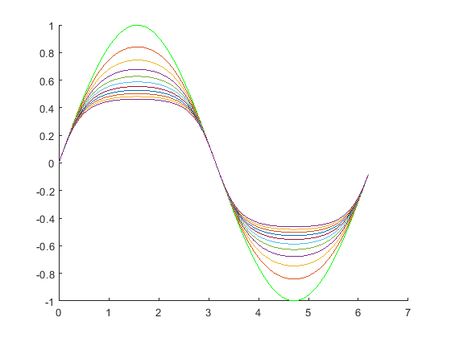
Exercise 3 %% % Using if/else to display passing or non-passing grades %
%grade = input('Exercise 3:\nEnter your grade for the class: '); grade = 0.9 % If the grade given/set is greater than or equal to 90%, print message to the console if (grade >= 0.9) fprintf('You aced the course.\n\n') % If the grade given/set is les than 90% and greater than or equal to 0.8, print message to the console elseif ((0.9 > grade) && (grade >= 0.8)) fprintf('You almost aced the course.\n\n') % If the previous two don't apply, you obviously didn't ace the course \/ \/ \/ else fprintf("You didn't ace the course...nice try.\n\n") end
grade =
0.9000
You aced the course.
Exercise 4 %% % Using a while loop to divide a large number %
num = 1000; count = 0; while (num >= 1) % divide num by two until num becomes less than 1 num = num/2; count = count + 1; % Add 1 to the counter every time we divide by 2, until we can't anymore. We display count later end fprintf('Exercise 4:\nTotal number of iterations to achieve a number less than 1 from dividing 1000 by 2: %.f \n\n', count)
Exercise 4: Total number of iterations to achieve a number less than 1 from dividing 1000 by 2: 10
Exercise 5 %% % Displaying arccosine and arcsine of various angles %
%x = input('Exercise 5:\nEnter a number between -1 and 1: '); % Ask the user for input between -1 and 1 x = 0.5 if ((x <= -1) || (x >= 1)) error("ERROR: Enter a valid number\n") % If the input isn't in this range, produce an error end % Calculate arc cos and sin in radians acos_rad = acos(x); asin_rad = asin(x); % Add conversion to degrees acos_deg = (180/pi)*acos_rad; asin_deg = (180/pi)*asin_rad; % Now for the printing (I do 4 prints to make it a bit more readable) fprintf("arccos(%g) = %.2f radians\n", x, acos_rad) fprintf("arccos(%g) = %.2f degrees\n", x, acos_deg) fprintf("arcsin(%g) = %.2f radians\n", x, asin_rad) fprintf("arcsin(%g) = %.2f degrees\n", x, asin_deg)
x =
0.5000
arccos(0.5) = 1.05 radians
arccos(0.5) = 60.00 degrees
arcsin(0.5) = 0.52 radians
arcsin(0.5) = 30.00 degrees
Exercise 6 %% % Digesting drone data and sorting it to plot proximity events %
load('Lab2_Exercise6.mat') % Load the drone data px, py, pz % Filter the matricies to be only values within 0.2m of the target value x_filtered = abs(p_x - 0.0) <= 0.2; y_filtered = abs(p_y - 0.0) <= 0.2; z_filtered = abs(p_z - 0.7) <= 0.2; % Create time vector T = 1:length(p_x); % ---- X Plot ------ % Plot T and p_x values that match up with filterd x values, with a red line figure(2) plot(T(x_filtered), p_x(x_filtered), 'r', 'LineWidth', 2.5, 'DisplayName', "X Position") % Create an "Objective" line, x and y label, and a title for the graph hold on yline(0, 'k--', 'LineWidth', 1.5, 'DisplayName', 'Objective (0 m)') xlabel('Sample number') ylabel('X Position (m)') title('Filtered X Position (within +-0.2m') legend hold off % ---- Y Plot ------ % Plot T and p_y values that match up with filterd y values, with a green line figure(3) plot(T(y_filtered), p_y(y_filtered), 'g', 'LineWidth', 2.5, 'DisplayName', "Y Position") % Create an "Objective" line, x and y label, and a title for the graph hold on yline(0, 'k--', 'LineWidth', 1.5, 'DisplayName', 'Objective (0 m)') xlabel('Sample number') ylabel('Y Position (m)') title('Filtered Y Position (within +-0.2m') legend hold off % ---- Z Plot ------ % Plot T and p_z values that match up with filterd z values, with a blue line figure(4) plot(T(z_filtered), p_z(z_filtered), 'b', 'LineWidth', 2.5, 'DisplayName', "Z Position") % Create an "Objective" line, this time at 0.7m, x and y label, and a title for the graph hold on yline(0.7, 'k--', 'LineWidth', 1.5, 'DisplayName', 'Objective (0.7 m)') xlabel('Sample number') ylabel('Z Position (m)') title('Filtered Z Position (within +-0.2m') legend hold off % ----- Combined Plot ------ % Plot all the lines together with different colors figure(5) hold on plot(T(x_filtered), p_x(x_filtered), 'r', 'LineWidth', 2.5, 'DisplayName', "X Position") plot(T(y_filtered), p_y(y_filtered), 'g', 'LineWidth', 2.5, 'DisplayName', "Y Position") plot(T(z_filtered), p_z(z_filtered), 'b', 'LineWidth', 2.5, 'DisplayName', "Z Position") % Create the three "Objective" lines, x and y label, and the title, as well as the legend yline(0, 'r--', 'LineWidth', 1.5, 'DisplayName', 'Objective X = 0 m') yline(0, 'g-', 'LineWidth', 1.5, 'DisplayName', 'Objective Y = 0 m)') yline(0.7, 'b--', 'LineWidth', 1.5, 'DisplayName', 'Objective Z = 0.7 m)') xlabel('Sample number') ylabel('Position (m)') title('Drone X, Y, and Z position (Filtered + Objective Points') legend("Location","northwest") hold off % I thought I would create a little legend in the console because there are a lot of figures and I couldn't figure out a way % to label them anything other than a number. fprintf("\nFigures 2, 3, 4, and 5 all corespond to Exercise 6 with the collection of drone data\n") %xindex = 1; %for i = 1:length(p_x) % if ( (p_x(i) >= -2) && (p_x(i) <= 2) ) I decided to keep this given that I worked with it for a long time to iterate % x_sorted(xindex) = p_x(i); through the data set for the numbers I wanted, before realizing I can just use % xindex = xindex + 1; abs() trick like I did above. This approach is more in line with the other % end excerises we did in the lab but takes up way more space and overcomplicates things. %end
Figures 2, 3, 4, and 5 all corespond to Exercise 6 with the collection of drone data
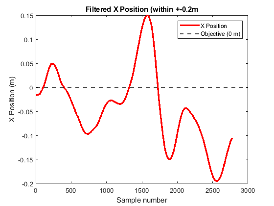
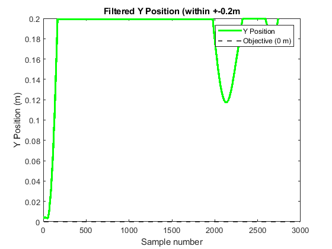
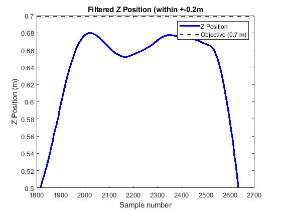
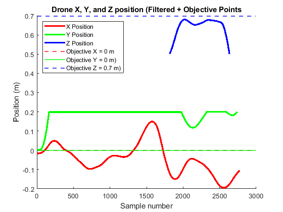
Excercise 7
Plotting theta with respect time using discrete-time dynamics equations
% ----------------------- Part D ----------------------- % Calling functions with a small value of theta figure(6) PlotThetaA(deg2rad(10), 0, 0.001, 5) title('Initial theta: 10 degrees') figure(7) PlotThetaB(deg2rad(10), 0, 0.001, 5) title('Initial theta: 10 degrees (Low theta asumption)') % There is no noticable difference between the two graphs at a theta value % this small. Doing the calculation by hand for thetaDot shows that because % the value is so small, the discrepency between sin(theta) and theta itself % (in radians, of course) is incredibly small, which leads to the very % similar behavior seen on the graphs. % ----------------------- Part E ----------------------- % Calling functions with a significantly larger value of theta figure(8) PlotThetaA(deg2rad(70), 0, 0.001, 5) title('Initial theta: 70 degrees') figure(9) PlotThetaB(deg2rad(70), 0, 0.001, 5) title('Initial theta: 70 degrees (Low theta asumption)') % Here the difference is still not very obvious, but is definitely visible % by just looking at the end point behavior. The function that assumes % small values of theta ends at almost the complete opposite angle % (-73 degrees vs ~40) as the function that correctly impliments changing % values of thetaDot. Doing a manual calculation once again, the discrepency % between sin(theta) and theta is too large to ignore, which is clear looking % at the graphs. % ----------------------- Part F ----------------------- % Calling functions with small values of theta but larger values of delta (t) figure(10) PlotThetaA(deg2rad(10), 0, 0.02, 5) title('Initial theta: 10 degrees with larger delta (t)') figure(11) PlotThetaB(deg2rad(10), 0, 0.02, 5) title('Initial theta: 10 degrees & larger delta (t) (Low theta asumption)') % For this final test, the end behavior between the two graphs is almost % exactly identical, very similar to the first test. This is expected, % because after shrinking the value of delta (t), we give the two graphs % less effective time to diverge (less total iterations through the loop). % A manual calculation once again provides a very small discrepency between % the two values of sin(theta) and theta. % I added another little legend here in the console for the same reason as above, there are a ton of figures to keep track of fprintf("Figures 6 through 11 are all the variations of plotting the angle theta\nfor a swinging pendulum using dynamics equations\n") % ------------------------ Part C Functions ----------------------- % Takes theta, theta dot, the time step, and the total time as inputs and plots theta with respect to time for those values function [] = PlotThetaA(theta0, thetaDot0, timeStep, totalTime) g = 9.81; L = 0.5; % Create time vector t = 0:timeStep:totalTime; N = length(t); % Initialize arrays with 0s theta = zeros(1, N); thetaDot = zeros(1, N); % Set up the initial conditions theta(1) = theta0; thetaDot(1) = thetaDot0; % Iterate over theta, incrementing theta and thetaDot according to dynamics equation for k = 1 : N - 1 theta(k+1) = theta(k) + timeStep * thetaDot(k); thetaDot(k+1) = thetaDot(k) - timeStep * (g/L) * sin(theta(k)); end % Now for the plot plot(t, theta * (180/pi), 'g', 'LineWidth', 2) xlabel('Time (s)') ylabel('Theta degrees)') title("Pendulum Angle Theta Recorded Over Time") end % Do almost the exact same thing, except for the change to thetaDot over time function [] = PlotThetaB(theta0, thetaDot0, timeStep, totalTime) g = 9.81; L = 0.5; % Create time vector t = 0:timeStep:totalTime; N = length(t); % Initialize arrays with 0s theta = zeros(1, N); thetaDot = zeros(1, N); % Set up the initial conditions theta(1) = theta0; thetaDot(1) = thetaDot0; % Iterate over theta, incrementing theta and thetaDot according to dynamics equation for k = 1 : N - 1 theta(k+1) = theta(k) + timeStep * thetaDot(k); thetaDot(k+1) = thetaDot(k) - timeStep * (g/L) * theta(k); end % Now for the plot plot(t, theta * (180/pi), 'r', 'LineWidth', 2) xlabel('Time (s)') ylabel('Theta (degrees)') title("Pendulum Angle Theta Recorded Over Time (Assuming small Theta Values)") end
Figures 6 through 11 are all the variations of plotting the angle theta for a swinging pendulum using dynamics equations
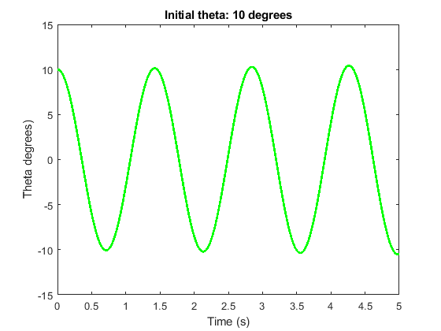
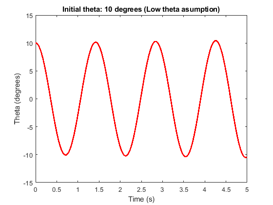
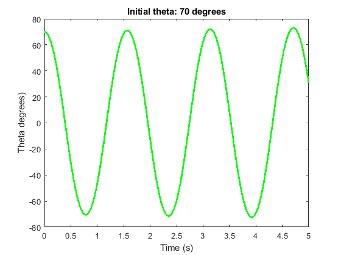
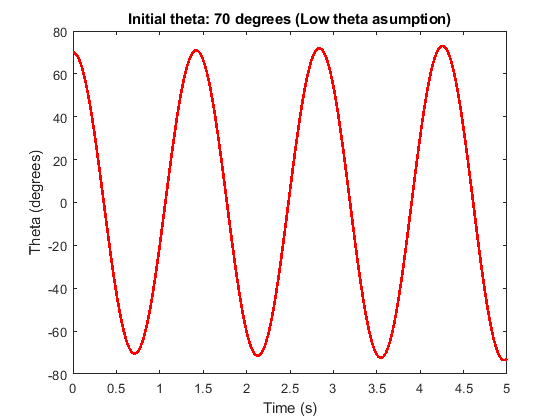
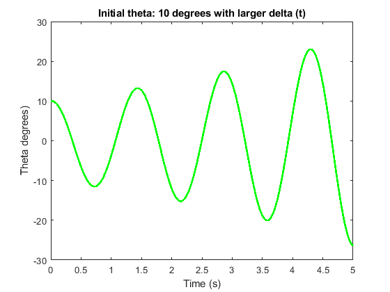
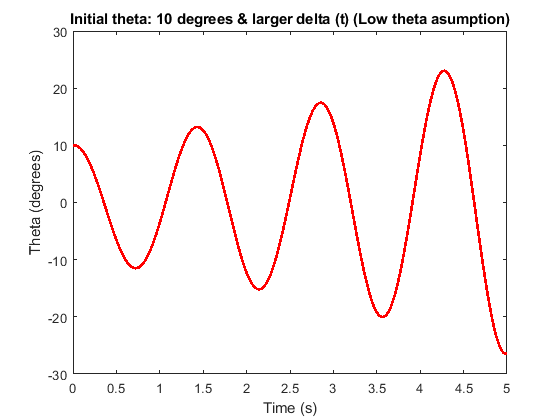